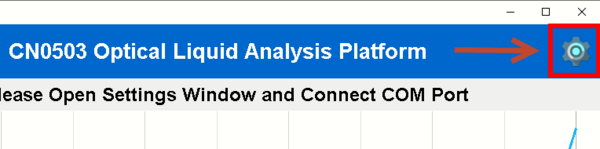
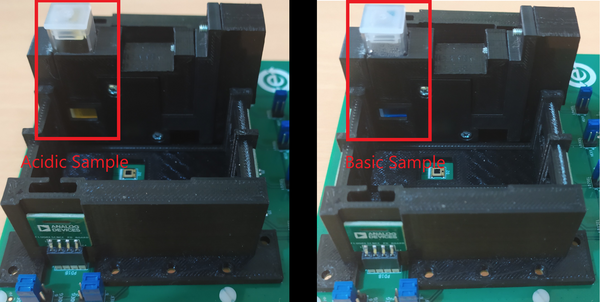

pH Measurement Demo
Colorimetry can be used to determine the concentration of materials in a solution based on its absorbance. One application of colorimetry is pH measurement with the aid of a coloring reagent. This page details the steps in setting up the EVAL-CN0503-ARDZ for pH measurement.
General Description
The EVAL-CN0503-ARDZ is a four-channel optical platform capable of fluorescence, absorbance and scattering measurements. The two middle channels/light paths are only capable of absorbance and 180-degree scattering measurements. This demo uses the two paths for absorbance measurements for two different light wavelengths.
Measuring pH using colorimetry involves using a chemical reagent or indicator. Different indicators exhibit different color and light absorbance behavior. Some indicators break down into different ions which also exhibit different properties which is why the solution has very different color hues at the ends of the pH range. For this demo we will be using bromothymol blue from either a prepared solution or the API pH Test Kit. Bromothymol blue separates into a weak acid (HIn) and a conjugate base (In). HIn has high absorbance to 430nm light while In has high absorbance at 615nm light. The demo will use light sources with these two wavelengths for the two middle channels.
While bromothymol blue exhibits the most change in color in the 6 to 8 pH range, buffer solutions with known pH solutions can be used to set up the measurement/calibration curve. The demo uses the CN0503 GUI and details steps to set up the pH measurement curve using a spreadsheet.
Demo Requirements
The following is a list of items needed in order to replicate this demo.
CN0503, completely assembled (see Hardware User Guide)
EVAL-ADICUP3029 with firmware (see Software User Guide)
Host computer with CN0503 software (see
Quick Setup Guide) and Microsoft Excel (Optional for generating your own measurement curve)Bromothymol blue or API pH Test Kit API Fish Care pH Test Kit
pH Buffer Solutions (Optional for calibration)
Common household chemicals for testing (caustic soda, baking soda, vinegar, and distilled water)
Setting up the EVAL-CN0503-ARDZ
Before starting with these steps, please check the Hardware User Guide for the
steps to assembling the CN0503. Additionally, please check the Software User Guide
for the steps in setting up the firmware and the Quick Setup Guide
for running the software. This demo assumes that you already have an assembled board with a
working firmware already programmed on the EVAL-ADICUP3029
and a ready-to-run software in the host computer.
Configure the onboard jumper shunt connection as below:
Jumper Header |
Setting |
Image |
|---|---|---|
LD2SEL and LD3SEL |
Set to VARD |
|
IOSEL |
Set to ARD |

|
P1.8V |
Shorted |

|
Initial Connection and Setup
Connect the 430nm LED Board and the 615nm LED Board to LED2 and LED3, respectively.
Connect the EVAL-ADICUP3029 to the CN0503 and connect a microUSB-to-USB cable from the board to the host computer.
Run the software using python scripts or the executable, see the
Quick Setup Guideand wait for the main window to open.
Click the Gear icon at the top right of the window to open Settings.
Select the correct COM Port of the device and then click the
Connectbutton. (seeQuick Setup Guidefor help)
Load the configuration file for pH Measurement:
CN0503 Configuration FileConfigure the settings for path 2 and 3 with the desired name, set wavelengths to 430 and 615, respectively, and select measurement type: absorption for both.
Add empty cuvette/s (or filled with distilled water) to the cuvette holder assembly and insert to path 2 and 3, and click
Optimize LEDfor each path. This properly sets the LED current in these paths so that the light intensity is close to 50%.
Setting a Baseline Ratio
The baseline ratio is used to remove small factors introduced to the measurement such as by the optical glass elements, e.g., beam splitter, lens, and filters. The baseline ratio is the ARAT value of a known setups such as with an empty cuvette or distilled water sample where it is known that the ratio of incident and transmitted light should be approximately 1. This value is used as a reference for successive measurements which will be defined as the relative ratio RRAT.
Click
OKon the settings window and on the main window select optical path 3 and display mode ARAT.Click on
Start Measurementand note the average value on the graph. Remember the empty cuvette or distilled water sample should still be in the path. The average value will be used as the baseline ratio for this path.Click on
Stop Measurement(Repeat the two previous steps for path 3) then, click on the settings icon on the top right corner to bring back the settings and click onAdvancedto bring up the another window.In the “Enter a direct command†text field, type “DEF1 RATB <average value>†for path 2 and “DEF2 RATB <average value>†for path3, then press
Send Command. Replace the <average value> to the value you have noted earlier.Optionally, you can write pH to the primary unit field of path 2 and path 3. These are just labels and are not necessary.
Click
Okayhere and on the settings window to go back to the main. Remove the empty cuvette/s or distilled water sample/s. The device is now ready to measure pH.
Performing a pH Measurement
Place a prepared cuvette with the test sample to either path 2 and path 3. Check the Preparing Test Sample section on how to prepare a cuvette with the test sample and indicator.
Select either path 2 or path 3, set display mode to INS1, and press
Start Measurement.
Important
For quick demo purposes, the system was configured in path 3, by default, to use the measurement curve shown below. Check the Generating a Measurement Curve section on how to set your own using spreadsheets and the advanced settings
Preparing Test Samples
Using colorimetry for pH measurement requires a reagent or indicator. The demo uses the API pH Test Kit which uses a reagent with hue similar to that of bromothymol blue. To prepare solutions in a cuvette for pH measurement with the CN0503, follow the steps outlined below.
If the cuvette was previously used, clean the cuvette with distilled water and let dry.
Add the solution to be tested to the cuvette up to 3/4 of the line at the top.
Add one drop of from the API pH Test Kit dropper bottle.
Cap the cuvette tightly and turn it upside down at least 3 times to thoroughly mix the reagent with the solution.
If the solution in the cuvette has uniform color, it can now be used with the CN0503. Below is a photo of prepared samples from common household chemicals.

Generating a Measurement Curve
The pH measurement curve is a function which models the relationship of the absorbance of either the weak acid or conjugate base of the reagent used to the pH of the solution. You can generate your own measurement curve using samples with known pH. The CN0503 is capable of approximating this using a 5th order polynomial function. <note important>While measurement curves use absorbance to measure pH, the CN0503 uses the relative ratio RRAT. RRAT is the absolute ratio (ARAT) of the transmitted light intensity to the incident light intensity, and divided by the baseline ratio. RRAT is related to absorbance using the equation below.
It is possible to change the mathematical expression for the ARAT but this demo will stick to using the default. Using Microsoft Excel, it is easy to generate the measurement curve by following the steps outlined below.
Create list of the RRAT measurements of each sample and the known pH in 2 different columns.
To get the RRAT measurement of a solution, select either path 2 or 3 and RRAT in the display units, and click
Start Measurement.Use the average or median of the measurement values.
Create a scatter plot of of the two columns with RRAT as the X-variable and pH as the Y-variable.
Create a trend line for the scatter plot and select the polynomial option with an order of up to 5. Also, check the box at the bottom to Display Equation on chart
Use the equation of the trendline and input the coefficients to the CN0503 using the Command field in the Advanced settings. See the Software User Guide for details on the command.